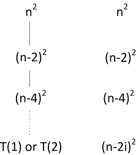
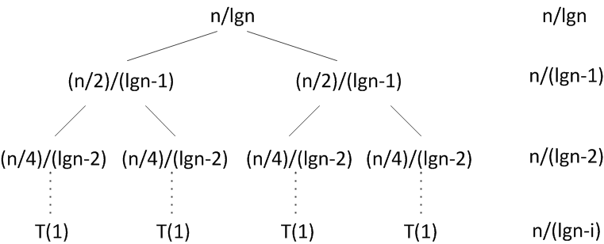
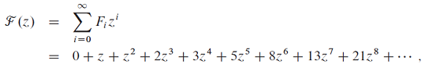
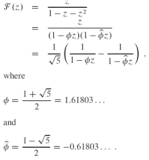
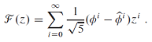
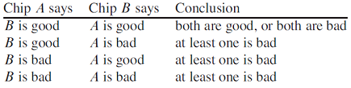
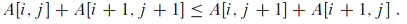

problems
4-1 Recurrence examples
Give asymptotic upper and lower bounds for T(n) in each of the following recurrences. Assume that T(n) is constant for n ≤ 2. Make your bounds as tight as possible, and justify your answers.
a. T(n) = 2T(n/2) + n4.
b. T(n) = T(7n/10) + n.
c. T(n) = 16T(n/4) + n2.
d. T(n) = 7T(n/3) + n2.
e. T(n) = 7T(n/2) + n2.
f. T(n) = 2T(n/4) + √n
Give asymptotic upper and lower bounds for T(n) in each of the following recurrences. Assume that T(n) is constant for n ≤ 2. Make your bounds as tight as possible, and justify your answers.
a. T(n) = 2T(n/2) + n4.
b. T(n) = T(7n/10) + n.
c. T(n) = 16T(n/4) + n2.
d. T(n) = 7T(n/3) + n2.
e. T(n) = 7T(n/2) + n2.
f. T(n) = 2T(n/4) + √n
g. T(n) = T(n-2) + n2.
- Θ(n4)
- Θ(n)
- Θ(n2lg n)
- Θ(n2)
- Θ(nlg7)
- Θ(√n lg n)
- Θ(n3)
g번 증명

깊이 k
n이 홀수일 때 => n-2k = 1, k = (n-1)/2
n이 홀수일 때 => n-2k = 1, k = (n-1)/2
n이 짝수일 때 => n-2k = 2, k = (n-2)/2
※ 편의를 위해 n/2로 놓는다.
4-2 Parameter-passing costs
Throughout this book, we assume that parameter passing during procedure calls takes constant time, even if an N-element array is being passed. This assumption is valid in most systems because a pointer to the array is passed, not the array itself. This problem examines the implications of three parameter-passing strategies:
1. An array is passed by pointer. Time = Θ(1).
2. An array is passed by copying. Time = Θ(N), where N is the size of the array.
3. An array is passed by copying only the subrange that might be accessed by the called procedure. Time = Θ(q - p + 1) if the subarray A[p..q] is passed.
a. Consider the recursive binary search algorithm for finding a number in a sorted array (see Exercise 2.3-5). Give recurrences for the worst-case running times of binary search when arrays are passed using each of the three methods above, and give good upper bounds on the solutions of the recurrences. Let N be the size of the original problem and n be the size of a subproblem.
Throughout this book, we assume that parameter passing during procedure calls takes constant time, even if an N-element array is being passed. This assumption is valid in most systems because a pointer to the array is passed, not the array itself. This problem examines the implications of three parameter-passing strategies:
1. An array is passed by pointer. Time = Θ(1).
2. An array is passed by copying. Time = Θ(N), where N is the size of the array.
3. An array is passed by copying only the subrange that might be accessed by the called procedure. Time = Θ(q - p + 1) if the subarray A[p..q] is passed.
a. Consider the recursive binary search algorithm for finding a number in a sorted array (see Exercise 2.3-5). Give recurrences for the worst-case running times of binary search when arrays are passed using each of the three methods above, and give good upper bounds on the solutions of the recurrences. Let N be the size of the original problem and n be the size of a subproblem.
b. Redo part (a) for the MERGE-SORT algorithm from Section 2.3.1.
a.
master method를 적용하면 c = Θ(nlog21). case2 이므로 T(n) = Θ(lg n).
master method의 case3을 적용할 수 있다. T(n) = Θ(n).
b.
- T(n) = 2T(n/2) + Θ(n)
∴ T(n) = Θ(n lgn) - T(n) = 2T(n/2) + Θ(n) + Θ(N)
= 2T(n/2) + Θ(N)
= 2T(n/2) + cN
∴ T(n) = Θ(n²) - T(n) = 2T(n/2) + Θ(n) + Θ(n) = 2T(n/2) + Θ(n)
∴ T(n) = Θ(n lgn)
4-3 More recurrence examples
Give asymptotic upper and lower bounds for T(n) in each of the following recurrences. Assume that T(n) is constant for sufficiently small n. Make your bounds as tight as possible, and justify your answers.
a. T(n) = 4T(n/3) + n lgn.
b. T(n) = 3T(n/3) + n/ lgn.
c. T(n) = 4T(n/2) + n²√n.
d. T(n) = 3T(n/3 - 2) + n/2.
e. T(n) = 2T(n/2) + n/ lgn.
f. T(n) = T(n/2) + T(n/4) + T(n/8) + n.
g. T(n) = T(n-1) + 1/n.
h. T(n) = T(n-1) + lgn.
i. T(n) = T(n-2) + 1/ lgn.
Give asymptotic upper and lower bounds for T(n) in each of the following recurrences. Assume that T(n) is constant for sufficiently small n. Make your bounds as tight as possible, and justify your answers.
a. T(n) = 4T(n/3) + n lgn.
b. T(n) = 3T(n/3) + n/ lgn.
c. T(n) = 4T(n/2) + n²√n.
d. T(n) = 3T(n/3 - 2) + n/2.
e. T(n) = 2T(n/2) + n/ lgn.
f. T(n) = T(n/2) + T(n/4) + T(n/8) + n.
g. T(n) = T(n-1) + 1/n.
h. T(n) = T(n-1) + lgn.
i. T(n) = T(n-2) + 1/ lgn.
j. T(n) = √nT(√n) + n.
이므로
.
==> e. 참조
.
- -2를 무시하는 방법을 쓴다.
.

- T(n) = Θ(n) 이라고 추측하자.
Reference : http://math.stackexchange.com/questions/127867/what-is-the-bound-of-tn-tn-2-logn
각 레벨은 O(n) 재귀시간을 가지므로 T(n) = O(n lglgn).
Reference : http://stackoverflow.com/questions/7280224/solving-the-recurrence-relation-tn-%E2%88%9An-t%E2%88%9An-n
4-4 Fibonacci numbers
This problem develops properties of the Fibonacci numbers, which are defined by recurrence (3.22). We shall use the technique of generating functions to solve the Fibonacci recurrence. Define the generating function (or formal power series)
F as
where Fi is the i th Fibonacci number.
a. Show that F(z) = z + zF(z) + z2F(z).
b. Show that
c. Show that
d. Use part (c) to prove that for i > 0, rounded to the nearest integer.
for i > 0, rounded to the nearest integer.
This problem develops properties of the Fibonacci numbers, which are defined by recurrence (3.22). We shall use the technique of generating functions to solve the Fibonacci recurrence. Define the generating function (or formal power series)
F as

where Fi is the i th Fibonacci number.
a. Show that F(z) = z + zF(z) + z2F(z).
b. Show that

c. Show that

d. Use part (c) to prove that
(Hint : Observe that  .)
.)
이런 식으로 계산해나가면 된다.
4-5 Chip testing
Professor Diogenes has n supposedly identical integrated-circuit chips that in principle are capable of testing each other. The professor’s test jig accommodates two chips at a time. When the jig is loaded, each chip tests the other and reports whether it is good or bad. A good chip always reports accurately whether the other chip is good or bad, but the professor cannot trust the answer of a bad chip. Thus, the four possible outcomes of a test are as follows:
a. Show that if more than n/2 chips are bad, the professor cannot necessarily determine which chips are good using any strategy based on this kind of pairwise test. Assume that the bad chips can conspire to fool the professor.
b. Consider the problem of finding a single good chip from among n chips, assuming that more than n/2 of the chips are good. Show that $\left \lfloor n/2 \right \rfloor$ pairwise tests are sufficient to reduce the problem to one of nearly half the size.
Professor Diogenes has n supposedly identical integrated-circuit chips that in principle are capable of testing each other. The professor’s test jig accommodates two chips at a time. When the jig is loaded, each chip tests the other and reports whether it is good or bad. A good chip always reports accurately whether the other chip is good or bad, but the professor cannot trust the answer of a bad chip. Thus, the four possible outcomes of a test are as follows:

a. Show that if more than n/2 chips are bad, the professor cannot necessarily determine which chips are good using any strategy based on this kind of pairwise test. Assume that the bad chips can conspire to fool the professor.
b. Consider the problem of finding a single good chip from among n chips, assuming that more than n/2 of the chips are good. Show that $\left \lfloor n/2 \right \rfloor$ pairwise tests are sufficient to reduce the problem to one of nearly half the size.
c. Show that the good chips can be identified with Θ(n) pairwise tests, assuming that more than n/2 of the chips are good. Give and solve the recurrence that describes the number of tests.
4-6 Monge arrays
An m x n array A of real numbers is a Monge array if for all i , j , k, and l such that 1 ≤ i < k ≤ m and 1 ≤ j < l ≤ n, we have
A[i,j] + A[k,l] ≤ A[i,l] + A[k,j].
In other words, whenever we pick two rows and two columns of a Monge array and consider the four elements at the intersections of the rows and the columns, the sum of the upper-left and lower-right elements is less than or equal to the sum of the lower-left and upper-right elements. For example, the following array is Monge:
10 17 13 28 23
17 22 16 29 23
24 28 22 34 24
11 13 6 17 7
45 44 32 37 23
36 33 19 21 6
75 66 51 53 34
a. Prove that an array is Monge if and only if for all i = 1,2, ... , m-1 and j = 1,2, ... , n-1, we have
(Hint: For the “if” part, use induction separately on rows and columns.)
b. The following array is not Monge. Change one element in order to make it Monge. (Hint: Use part (a).)
37 23 22 32
21 6 7 10
53 34 30 31
32 13 9 6
43 21 15 8
c. Let f(i) be the index of the column containing the leftmost minimum element of row i . Prove that f(1) ≤ f(2) ≤ … ≤ f(m) for any m x n Monge array.
d. Here is a description of a divide-and-conquer algorithm that computes the leftmost minimum element in each row of an m x n Monge array A:
Explain how to compute the leftmost minimum in the odd-numbered rows of A (given that the leftmost minimum of the even-numbered rows is known) in O(m+n) time.
An m x n array A of real numbers is a Monge array if for all i , j , k, and l such that 1 ≤ i < k ≤ m and 1 ≤ j < l ≤ n, we have
A[i,j] + A[k,l] ≤ A[i,l] + A[k,j].
In other words, whenever we pick two rows and two columns of a Monge array and consider the four elements at the intersections of the rows and the columns, the sum of the upper-left and lower-right elements is less than or equal to the sum of the lower-left and upper-right elements. For example, the following array is Monge:
10 17 13 28 23
17 22 16 29 23
24 28 22 34 24
11 13 6 17 7
45 44 32 37 23
36 33 19 21 6
75 66 51 53 34
a. Prove that an array is Monge if and only if for all i = 1,2, ... , m-1 and j = 1,2, ... , n-1, we have

(Hint: For the “if” part, use induction separately on rows and columns.)
b. The following array is not Monge. Change one element in order to make it Monge. (Hint: Use part (a).)
37 23 22 32
21 6 7 10
53 34 30 31
32 13 9 6
43 21 15 8
c. Let f(i) be the index of the column containing the leftmost minimum element of row i . Prove that f(1) ≤ f(2) ≤ … ≤ f(m) for any m x n Monge array.
d. Here is a description of a divide-and-conquer algorithm that computes the leftmost minimum element in each row of an m x n Monge array A:
Construct a submatrix A' of A consisting of the even-numbered rows of A. Recursively determine the leftmost minimum for each row of A'. Then compute the leftmost minimum in the odd-numbered rows of A.
Explain how to compute the leftmost minimum in the odd-numbered rows of A (given that the leftmost minimum of the even-numbered rows is known) in O(m+n) time.
e. Write the recurrence describing the running time of the algorithm described in part (d). Show that its solution is O(m+ n logm).